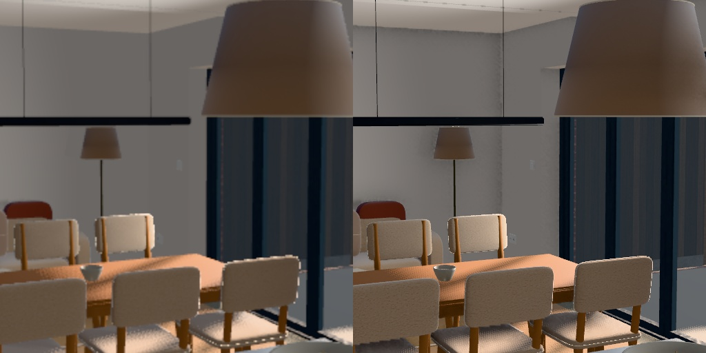

The pipeline, start to finish
Every client home goes through the same twelve stages: from the architect's drawings and a few photos to a house you can walk through in a browser, on a phone, in a Quest headset and, as the premium tier, in Unreal Engine. This document explains each stage in plain English, shows what it looks like, and says honestly where each one stands today on 23 Battle Road, the test house.
Room planner: https://192.168.1.118:8450/plan/ · Walkthrough (review): https://192.168.1.118:8443/w/ · Customer preview: https://192.168.1.118:8443/p/
Latest read-only house on studio Wi-Fi · After · Before and conservatory.
Garden design on the studio Mac or studio Wi-Fi for iPad and Quest. 6 November — view controls updated: Plan, 3D and Walk remain visible even with tools minimised. Temporary car and van size guides can be placed, moved, rotated and resized; they are excluded from saved layouts. Choose Outbuilding base, draw its footprint, finish and save; its measured reference is the input for the later studio box and tattoo-studio concept image. Start the garden port with
tools/start_garden.command.If a link doesn't load (after a restart), double-click Start Garden Studio Server on the Desktop and keep its window open. This document is kept up to date by Claude and Codex whenever a stage is added or changed.
The whole journey on one page
The rule that holds it together: one written plan (PLAN.md) that every stage is checked
against, and one lessons log: every mistake, whether ours, a check's or one Jack spots in the headset, is
written down with its cause and a rule that stops it happening again, before it's fixed. Three hundred lessons so far;
each one makes the next house cheaper.
The stages
Gather the inputs
● workingBefore anything is built: the architect's drawings (plans, elevations, sections), photos of every room and elevation, close-ups of each finish (brick, roof, floor, worktop), floor and ceiling heights, the client's style choice, and the decisions (what "before" and "after" mean, budget caps). Gaps become one form of questions with a recommended answer each.


Drawings to exact data
● workingEvery wall, door, window, floor level, stair and roof plane is read off the drawings into numbers. Photos and tape measurements win where they disagree with the drawings, and every override is written down (for example, the hallway width Jack measured). The plan is then drawn back from the data and laid over the drawings and photos to prove it lines up.


Design spec and the client planner
● working, still improvingEvery finish (floor, walls, skirting, doors) and every item (sofa, beds, lamps, towels) is decided and placed in a signed spec. The client does this themselves in the room planner: a free plan view where they see each room, drag furniture, swap items from a catalogue by style, change colours and preview in 3D, before any expensive 3D work. When they're happy they pay the deposit and the build starts.


Furnish and finish each room
● private candidate checkedOpen Furnish a room in the walkthrough or a room in the client planner. Both use the same measured layout. Select a catalogue thumbnail, point at its host and place the piece. Place pieces anywhere. Walls attract nearby furniture. Arrows move by 10 mm, Shift reduces the step to 1 mm, and Page Up or Page Down adjusts height. Click a wall in the overhead plan to highlight its face in cyan before painting. Carpet and concrete use photographed surfaces at metre scale. Minimise either editor to walk around.
Bird’s-eye has two displays. Plan shows outlines. Detailed 3D draws the actual room below the ceiling and retains the same controls and furniture positions. Garden and Furniture switch editors in the same visit. Each keeps its working draft.


The floor materials carry colour, surface normals and roughness into the exported GLB. The photographs and channel sources are recorded in the studio kit. The material close-ups were rendered in the walkthrough engine.


The checked private candidate is available on the studio Mac. First publication creates a missing design file. Each later private build reads the client’s saved version, including pieces from an earlier catalogue release.
Draw the garden
● desktop, tablet and simulated Quest checkedJack draws directly over the surveyed garden in the walkthrough. A circle keeps its radius in metres. Straight runs use their two ends, curves retain their tangents, and closed areas carry a material and level. A sunken court cuts the displayed ground and its steps carry the walker down to the proposed floor. Each plant and tree has its own editable position.


Choose Outbuilding base for a freeform concrete footprint. The plan labels its measured lengths, the inspector gives its area, perimeter, thickness and levels, and Copy base reference carries its ID and contour into the later structure design session.
Minimise switches to standing height. On the Mac the pointer locks to the walkthrough: use WASD to walk and move the mouse to turn. Escape releases it, and Tab or Show tools restores the design view.

Choose How to use in the active editor. On iPad the Pencil draws while fingers pan and zoom. In Quest the tools are on the left wrist and the right controller edits the garden or its measured plan. The original garden viewer and house toolbar both open this editor.
The shell
● candidate checks passedThe house is built by script in Blender from the data: walls, floors, ceilings, stairs, roof, doors and windows, then every surface finished: plastered reveals, skirting, architraves, window boards. The house must look finished, never "mid-build" (no raw brick inside, no gaps, nothing poking through the roof).
The generator assigns each wall face to a room as it builds the openings. It fits the cut faces of partial walls, the stair enclosure and the vault separately. Roof planes and room polygons set the ceilings and floors. The Before conservatory uses the studio footprint and clear heights. Its twin-wall glazing follows the pitch from the house to the rear boundary, and the approved construction sequence removes it.


Furniture and fittings: the studio kit
● catalogue built and photographedThe library contains 280 entries across 85 kinds. Each of the six families has 39 styled pieces and can use the same 46 shared fittings. The catalogue shows the measured outer dimensions, including handles and soft furnishings. A custom size rebuilds the parts and checks their finished envelope.
Blender produces an individual model. A local three.js studio photographs it from the front at three-quarter view. The model, textile grain, scan licence, picture and regeneration tools live together in tools/library/kit/.

Materials and light
● working, still improvingEvery surface gets a proper material at true scale (oak boards at real width, marble, painted joinery, bouclé, linen), colour-matched to the client's photos. Then the light: a low warm sun, daylight coming in from each room's real windows, soft shadows where things meet the floor and walls, and lamps that work. This is what makes it feel real.

The outside
● working, still improvingBrickwork matched to the real house, roof, the front garden with its paving, planting and pergola, the street, neighbours and trees. The candidate samples the measured lawn surface for each fallen apple and maps the reviewed Grass001 texture over the original lawn at a 1.4 m repeat.


Self-checks: the machine looks first
● workingBefore anyone sees it, the house is swept from a grid of standing points in every room, every direction, at two eye heights. The machine counts raw surfaces, floating or clipping items and missing textures; a cheaper AI reads the pictures; only flagged frames get a closer look. Then fixed "hero" cameras are compared round by round.

The owner's walk and the lessons loop
● workingJack walks the house in the headset and draws on anything wrong. A one-tap reason (visual bug, missing item, hole in wall, missing texture, clipping, wrong way round, don't like it) plus a voice note. Every mark becomes a lesson with its cause and a rule, then it's fixed in one round.


Light the room you are standing in
● private viewer checkedHouse lights on the toolbar switches every visible bulb together, including lamps seen through a window from the garden. Daylight, Golden hour and Night change the sky, directional light, reflections and window fill. The lamp switch is independent. Nearby window sources fade over distance and hand over gradually as the visitor walks. The published preview is available on the studio Wi-Fi.
The final Wi-Fi check crossed the garden, porch and hall with a 17 ms worst frame. All 31 fixtures responded to the toolbar switch. The 1200 × 750 studio Mac check averaged 60 fps in the kitchen and lounge with the lights on or off. The garden averaged 60 fps off and 58.5 fps on. Its longest lights-on frame was 49.9 ms. These short camera-turn checks cover the studio Mac; the client PC and physical headset still require a presentation run.



The walkthrough: browser, phone and Quest
● working, still improvingOne link works everywhere: Before/After, Furnished/Unfurnished, Go to any room, fly, teleport, open doors, 4 ft or real height, thumb sticks on phones. The headset is being made smooth without losing quality: drawing only what you can see (done), merging each room's parts and compressing textures (next), then baking the light in.


Unreal Engine: the premium tier
● golden-hour stills and first film ready for reviewThe same house in Unreal Engine 5.8, on a rented cloud graphics card (no Unreal on the Mac). First a look-dev session: close-ups of the tricky materials and one still per room, judged before anything else is spent. Then the walkthrough, the film, and streaming to a headset. The approved cloud budget is £10 total for this house. The current stills use the furnished final-stage export, with separate lounge, kitchen and front-left garden cameras. The model’s approved material textures are included, with private drawing and address metadata removed.
The render session keeps its imported scene, shader cache, logs and completed PNGs on a dedicated Runpod network volume. A retry loads the saved scene and queues unfinished cameras. The compute watchdog ends the GPU rental at its time cap while the network volume is retained. Storage is billed separately until it is removed. Each completed still is copied back to the Mac and checked before delivery.
Garden realism pass (4 November): the first and revised house frames are saved for comparison. The revised garden has corrected native timber and foliage materials, longer curved grass and scanned gravel with native displacement on the measured surfaces. The earlier faceted proxy stones are removed. Full-detail CC0 tree/plant scans and additional scanned leaf canopies replace the simple planting. The wide frame and ground close-ups were reviewed. Species substitutions and visible paving texture repetition remain limitations. Keep its measured layout and chosen brick appearance; compare the same front-left camera before and after.
Standing authoring rule — every agent, every element: if an element is better built in Unreal, build it directly there; Blender is not a mandatory first step. This covers everything, including structures, roofs, furniture, finishes, flooring and landscape. Every preview and handoff must explicitly name anything missing or temporary because it is deferred to Unreal, explain the native benefit and intended replacement, and state whether it is planned, in progress or visually verified. The canonical rule is ~/Garden Studio VR/BUILD-ENGINE-RULE.md, referenced by the global Codex/Claude instructions and project workflow.
Camera rehearsal — approved: before the full film, watch the revised 24-second hallway-to-lounge-to-kitchen move in the existing browser model. The preview has playback, scrubbing, scene buttons and a synchronised plan route. It enters from the hallway, pans to the window and back around to the doorway, lowers to the fireplace, then rises into a kitchen sweep. An 84° horizontal lens shows the room scale. Its lens is converted correctly between Unreal horizontal FOV and the browser vertical FOV. Final golden-hour lighting and animated effects are not included. Open camera rehearsal on this Mac. Jack approved this route; the Unreal film is now rendered at 1080p.


Cinematic walkthrough — first golden-hour film rendered: a continuous-feeling tour with deliberate pauses and pans toward a burning log stove, candle flames, cooking steam and views of the garden. Birds and extinguishing candle smoke are not included in this test; those remain planned native Unreal effects. Build these effects in Unreal so their lighting and reflections belong to the scene. Visible candle smoke is motivated by extinguishing. Sequence the effects and camera together, preserve repeatable render checkpoints, and review short previews before rendering the full film. Jack approved the film within the existing £10 total house budget. Open the stills and film review on this Mac. The GPU is stopped; the editable project and shader cache remain on persistent storage. Paving repetition, substitute species and a small green stove highlight remain open quality limits. The review package embeds a seekable media source so playback does not depend on adding Range support to the existing server.


The native setup lives in tools/unreal/garden_look.py; garden_detail_bundle.mjs samples measured surface geometry. The renderer verifies actors and lights after loading and can reconstruct from persistent imported assets. Native golden-hour lighting and the repaired alcove are visually checked in the frames above. Animated flame and vapour cards use native Unreal shaders, not fluid simulation; the 24-second film has all 576 frames and passes a full decode check. The fire uses an Epic engine atlas, candle and vapour use native shaders, and dust uses animated geometry. These are simplified effects; birds and extinguishing smoke remain planned.


Deliver
● plannedA private link for the client (browser, phone, headset), stills and a film, and for the premium tier a streamed Unreal walkthrough. A branded loading screen and clean controls make it feel like a product.

What it costs
| Item | Per house | Notes |
|---|---|---|
| Claude subscription share | About 30–50% of a Max 20× week (target) | On Max 5×, roughly 2–3 houses a month |
| Cloud graphics card (Unreal, bakes) | £15–40 (first houses), less later | Well under £1 an hour; every run capped and approved first |
| Streaming to a client headset | About £1 an hour while in use | Premium tier only |
| Models and textures | Free | Our own kit plus CC0 libraries, licences recorded |
| Jack's time | 5–8 hours | Capture visit, sign-offs, three to five headset walks |
| Price to client | About £800, +£200 for VR | Unreal as a paid extra |
The rules that make it repeatable
- The plan is the anchor:
PLAN.mdis re-read at every stage, every fix round and every report. - Measure, never guess: drawings and photos are the truth; tape measurements beat both.
- Every mistake becomes a lesson with its cause, a rule and a check, written before the fix.
- The client sees a clean build: machine checks first, then a human walk, then Jack.
- Proportionate checks: enough to catch faults, never so many that the work stops.
- Private by default: drawings, photos and models of a client's home never go anywhere public.